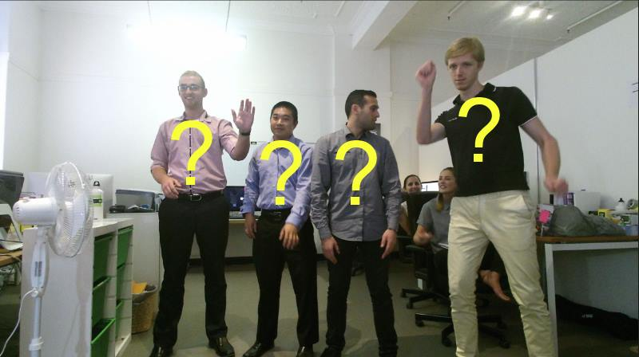
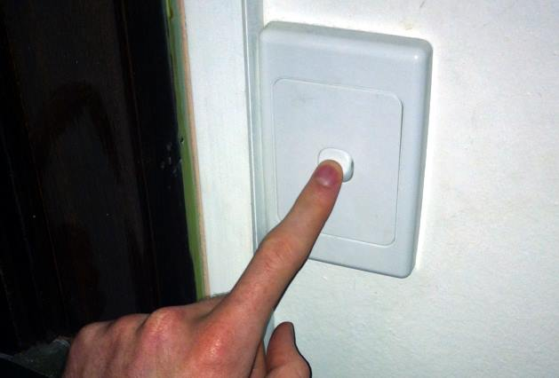
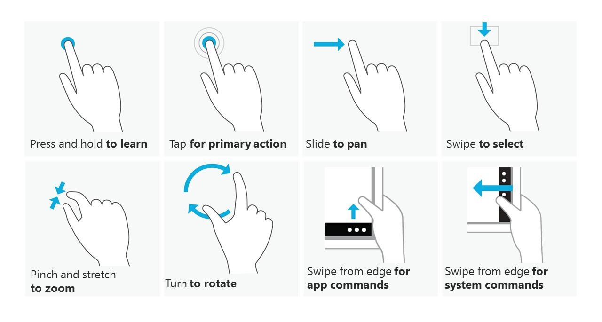
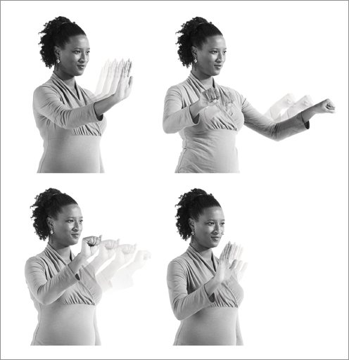
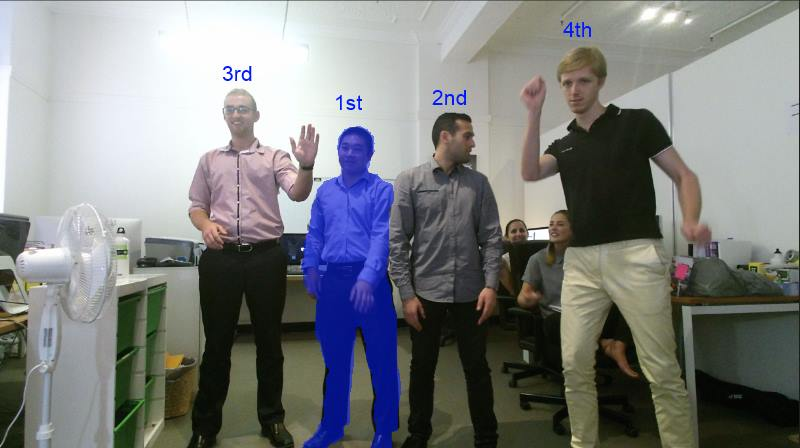
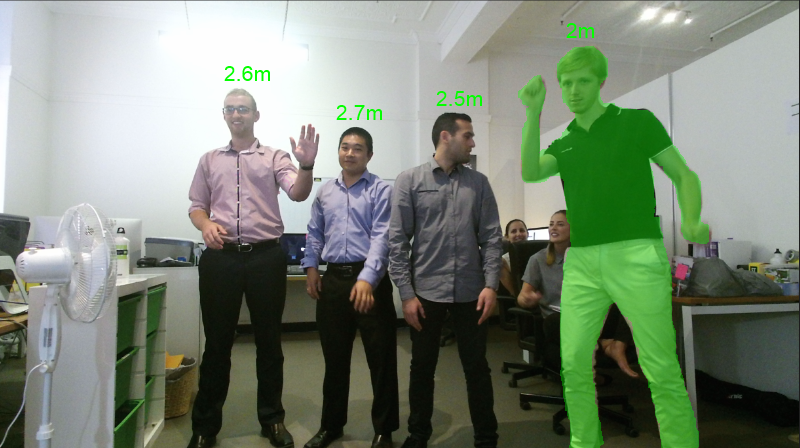
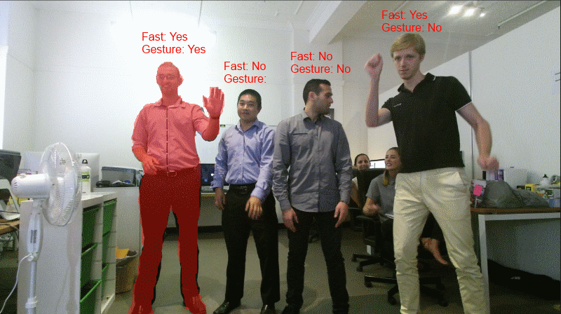
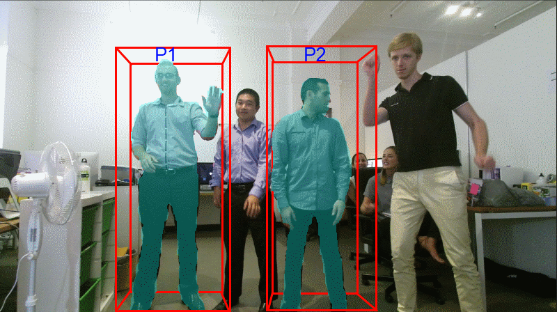

Kinect 2 Hands On Labs

Lab 14: Tracking Strategies
Estimated Time to Complete: 40min
This lab is part of a series which teach you how to build a Windows 8.1 Store Application which uses almost every available
feature of the Kinect 2. This is the 14th and last lab in the series, and it
explains some common and effective strategies for tracking users and players in your Kinect 2 applications.
This lab does not include much code, but instead offers insight into the design of applications with NUIs(Natural User Interfaces) such as you might create for a Kinect 2 solutions. This lab includes a discussion of the limitations and advantages of each tracking method.
This lab will explain the following:
- Tracking a user who is the first to be seen.
- Tracking the user who is the closest to the Kinect 2.
- Tracking a user who is the most active in the scene.
- Tracking several people simultaneously.
Exercise 1 - Tracking Strategies
Since the invention of physical buttons, interfaces have had one thing that gets taken for granted: Deliberation.
Pressing a physical button is a deliberate action because it is attached to something which is (hopefully) obviously an interface with some kind of feedback, and you know you are pressing it because you use your muscles to depress a button in a single direction. You must physically connect with the button so it's a fair assumption that the button getting pressed was a deliberate action.

Touch screens only require a touch, not a press. So they have had issues with non-deliberate touches in their own way, which is why standard gestures like swipe to confirm or double-tap have come into existence. There is less effort to interact with a touch screen (no force is required, only a fingertip or stylus touch is needed) so with less effort to interact, it's more likely to get a false interaction.

So we come to today and the rise of the Natural User Interface using body tracking, where your software has an option to record every movement of every joint, with no deliberation from the user. You must decide how to handle this in your application. There are no existing standards of interfaces or tracking methods using NUI, which is exciting for developers! You could be the one to create a new gesture which is so good and foolproof that it becomes a standard.

When you are designing your Kinect 2 app, you must ask yourself:
- What happens when a crowd of people walk past?
- What happens when someone is very short?
- What happens when someone is very tall?
- What happens when someone leaves the screen to get a friend, then comes back?
- What happens when someone is wearing unusual clothing?
- What happens when someone is using a walking frame or cane?
- What happens when there is not much room to move or furniture in the scene?
These are all realistic scenarios which occur often in a public space, and even in the lounge room. The design of your software needs to consider all of these situations and many more. It's fine to only cater for some of these situations, but know your limitations as you design your interface.
As a single developer, it is difficult to consider all these options of usability when you are a single user testing an app. Also it's quite expensive to pay many testers to work concurrently to test an app in the same instance. That's why Microsoft knew it was necessary to make tools like Kinect Studio to enable developers to repeat and test multi-user scenarios easily, by recording and playing back streams of interaction.
If your task is even as simple as counting users who interact with your app, you must explicitly decide what exactly an interaction is. Some common interactions are tracked as:
- Complete body registered in the scene for a single frame. (Inaccurate - up to 6 concurrent users)
- Complete body facing the screen for at least 300 frames (or ~ 10 seconds) (Accurate - up to 6 concurrent users)
- A face with eyes looking at the screen for at least 10 seconds (Very Accurate - up to 2 concurrent users)
- A user pressing a button or deliberately interacting with a gesture (Most Accurate - concurrency depends on UI, ususally 1 person at a time).
So how will you do it? How will you handle one or many users in your application? In this lab you will learn some common methods for achieving this to help you design your own NUI.
First person gets control
To be explicit: The first body registered by the Kinect in the frame is maintained as the single user of the application until their body is no longer recognized.

Pros:
- Easier to design a NUI for single user.
- First come, first served is fairly engrained in users minds.
- Users are used to single-user experiences.
Cons:
- Less unique as an interaction.
- Lose the the first tracked body if they are obscured (body index order changes)
- Application must allow the user to be at any position in the frame and still access functions.
- First person registered is not necessarily the deliberate user.
- Awkward to switch user. (Must leave the scene and let another body take first position)
How?
As you have seen in previous labs, the body frame will come through with all 6 possible bodies in the array of the frame result. Whenever one of the bodies in the array is tracked, record the index as a class level variable and use it to access the array, ignoring all other bodies.
When the body at that index is no longer tracked, reset the activeBodyIndex to an invalid value.
private int activeBodyIndex = -1; // Default to impossible value.
private void Reader_MultiSourceFrameArrived(
MultiSourceFrameReader sender,
MultiSourceFrameArrivedEventArgs e)
{
MultiSourceFrame multiSourceFrame = e.FrameReference.AcquireFrame();
// If the Frame has expired by the time we process this event, return.
if (multiSourceFrame == null)
{
return;
}
using (bodyFrame =
multiSourceFrame.BodyFrameReference.AcquireFrame())
{
Body[] bodiesArray =
new Body[this.kinectSensor.BodyFrameSource.BodyCount];
if (bodyFrame != null)
{
bodyFrame.GetAndRefreshBodyData(bodies);
// Check activeBodyIndex is still active
if (activeBodyIndex != -1)
{
Body body = bodiesArray[activeBodyIndex];
if (!body.IsTracked)
{
activeBodyIndex = -1;
}
}
// Get new activeBodyIndex if it's not currently tracked
if (activeBodyIndex == -1)
{
for (int i = 0; i < bodiesArray.Length; i++)
{
body = bodiesArray[i];
if (body.IsTracked)
{
activeBodyIndex = i;
// No need to continue loop
break;
}
}
}
// If active body is still active after checking and
// updating, use it
if (activeBodyIndex != -1)
{
Body body = bodiesArray[activeBodyIndex];
// Do stuff with known active body.
}
}
}
}
Closest person gets control
To be explicit: The body at the least depth from the camera of all bodies is the single user of the application.

Pros:
- Easier to design a NUI for single user.
- When in a group, the position of the active user being in front makes it obvious who is controlling the app without looking at the screen.
- Users are used to single-user experiences.
- Easy to code.
- Easy to explain succinctly. "The closest person is in control"
- Easy to switch user. Simply be the closest.
Cons:
- Less unique as an interaction.
- Any bodies who accidentally walk in front immediately get control.
- People will naturally be closer to the screen as a result of the rule.
- Requires education for the user.
How?
This one is easy. Pick a joint in the body to be representative of the whole body. In this example we will use the JointType.SpineBase. Then store the index of the body with the minimum Z value for that joint.
private void Reader_MultiSourceFrameArrived(
MultiSourceFrameReader sender,
MultiSourceFrameArrivedEventArgs e)
{
MultiSourceFrame multiSourceFrame = e.FrameReference.AcquireFrame();
// If the Frame has expired by the time we process this event, return.
if (multiSourceFrame == null)
{
return;
}
using (bodyFrame =
multiSourceFrame.BodyFrameReference.AcquireFrame())
{
int activeBodyIndex = -1; // Default to impossible value.
Body[] bodiesArray = new Body[
this.kinectSensor.BodyFrameSource.BodyCount];
if (bodyFrame != null)
{
bodyFrame.GetAndRefreshBodyData(bodies);
// Iterate through all bodies,
// no point persisting activeBodyIndex because must
// compare with depth of all bodies so no gain in efficiency.
float minZPoint = float.MaxValue; // Default to impossible value
for (int i = 0; i < bodiesArray.Length; i++)
{
body = bodiesArray[i];
if (body.IsTracked)
{
float zMeters =
body.Joints[JointType.SpineBase].Position.Z;
if (zMeters < minZPoint)
{
minZPoint = zMeters;
activeBodyIndex = i;
}
}
}
// If active body is still active after checking and
// updating, use it
if (activeBodyIndex != -1)
{
Body body = bodiesArray[activeBodyIndex];
// Do stuff with known active body.
}
}
}
}
Most active person gets control
To be explicit: The body with the joints which are moving the most in a particular fashion is the person in control.

Pros:
- Easier to design a NUI for single user.
- Passive onlookers will never be accidentally in control.
- Users are used to single-user experiences.
- Easy to switch user.
- Fairly natural. Attention given to the most active.
- Unique as an interaction mechanism.
Cons:
- Difficult to code.
- Relies on other gestures to be accurate.
- Interface must reject slow speeds to force the person in control to be the most active.
- Involves tracking joints over time, more demanding on hardware.
- Requires education for the user.
How?
Simply tracking the movement of all joints and then giving control to the greatest mover is so error prone it's not worth pursuing. When people are in front of an experience it is very normal for them to be still for seconds at a time as they read text. Even if they are positioning their arm to hit a button they can do it slowly. Alternately, any other body in the scene could accidentally sneeze or run past in the background, thereby moving more than the active user and gaining control.
The simplest way to get this working is actually to use a gesture to gain control of the application and respond to that. You could do a continuous "Wave a hand at the screen" gesture. Then while a body has been waving for 3 seconds continuously, switch to that body as the active user.
Gestures are explained in Lab 13 - Using Gestures.
People in region get control
To be explicit: The bodies contained within a virtual area or areas are in simultaneous control.

Pros:
- Fun for users, more interaction is usually more fun.
- Easy to understand and communicate. "Stand on the circle".
- More adaptive NUI, single or many users.
- Easy to switch user.
- Easy to code.
Cons:
- Difficult to design. Adaptive NUI's require lots of considerations to deal with concurrent bodies.
- Difficult to test. Simultaneous users requires exponentially more testing.
- Difficult to identify who is interacting unless you expose the color feed and show the users.
How?
There are multiple ways to achieve this so you should look to some popular examples for guidance. This interaction is popular among games, as games have had multi-player considerations, and therefore UI's for concurrent users, as a design challenge for ages. Remember the Kinect was initially developed for the XBox, a games console.
A popular solution for multi users is to use the BodyIndexFrame mapped in depth space as a kind of silhouette for each player, so the particpants can identify who is interacting with the system. Positioning interactive cursors where the active users hands can help them to interact with controls (such as buttons) within the interface.
As for explicitly allowing a certain region, use similar joint retrieval code as in the "Closest person gets control" strategy. Only allow the active body index if the CameraSpacePoint for that joint is within your min/max of your region in X, Y and Z co-ordinates, otherwise skip that body index.
Summary
Developing interactions for Kinect 2 apps is very exciting because it's mostly uncharted territory. Your designs have freedom because the possibilities for interaction are any movement of any body, or joint, or even movements of in the face, and any combination of them!
The best strategy for tracking users in your own application will probably be a combination of those discussed here. You will definitely have to experiment heavily with interactions as you develop your own unique NUI.
The effort to get the interactions working well will pay off. Users become excited about new interfaces and using your body to interact with a machine without touching any physical device is a sci-fi dream. NUI's using the Kinect are hugely impressive when done right.
View Issues
Give Feedback
Back to Top